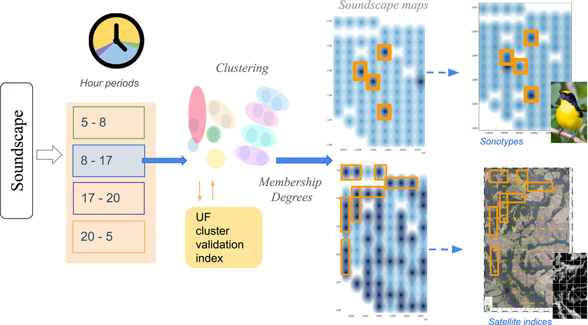
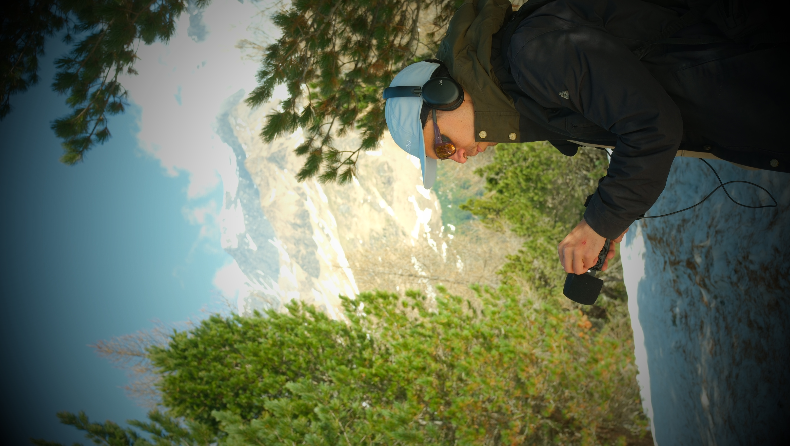
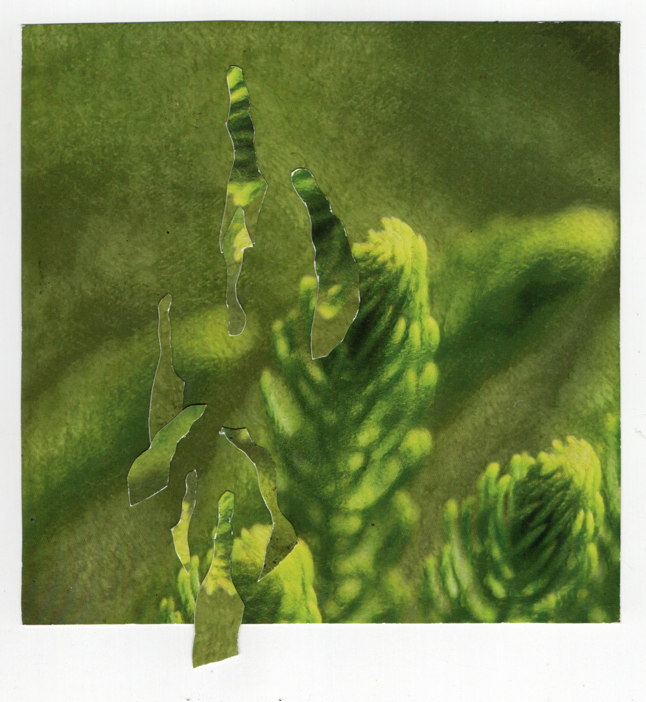

About
I am Nestor David Rendon, PhD — AI researcher and Artist. I believe that everything is connected. Each element belongs to others in larger or smaller degree to some degree—along lines explored in fuzzy logic, where membership is partial rather than absolute. Words and sounds are abstract building blocks of languages, carried by waves and electromagnetic fields; the whole picture is dynamic, this is the nature of the universe.
From an early age I loved exploring and contemplating these rhythms of nature. As I grew older, I came to see them as hidden patterns waiting to be uncovered. The curiosity to understand how things work, and the pleasure of sensing them, are what drive my path.
On one side, I strongly believe in science and apply it to grasp how the world is made. My path in engineering and artificial intelligence follows that principle: understanding complex systems and turning that understanding into tangible solutions. On the other, art has let me meet nature not only through reason but through feeling and contemplation. In Johann Wolfgang von Goethe’s words: “Art is the mediator of the ineffable; science, its interpreter.”
Here I bring together the science and art projects I have been part of—to share some of my questions and trajectories, in case friends or collaborators want to walk together on paths of discovery and of looking closely at the world. You can browse parallel strands of that work in the tabs — Datascience, Ecoacoustics and bioacoustics, Music, Blog & Publications (including a readable CV summary you can open from the list), Contact, and Others.

Download CV (PDF) — full document: Nestor_Rendon_AI_Data_Science.pdf (same file as in this repository).
Datascience & AI
I am an AI researcher with a PhD in data science and statistical modeling (University of Antioquia, 2024, cum laude). In plain terms, my work sits at the meeting point of three habits of mind: asking how sure we are when data or models speak, learning patterns from images and signals with modern machine learning, and building assistants—often around large language models (LLMs)—that help people navigate complex information and take the next step. I care about systems that stay honest about uncertainty, that can be deployed and monitored in the real world, and that remain maintainable as teams and models evolve.
Since 2020 I have worked at xFarm Technologies in Switzerland as a vision engineer and data scientist. xFarm sits at the intersection of agriculture and technology: fields, seasons, sensors, and satellite views generate huge streams of evidence, and farmers and agronomists need answers that are timely, interpretable, and dependable. There I have helped shape end-to-end pipelines—from bringing data in, cleaning it, and training models, to checking them rigorously, putting them online, and watching how they behave in production (including on AWS and GCP). Part of the role is deep learning for vision (for example, models that read stress or structure in crops and land from images), and part is conversational agents that make advanced analytics feel closer to a dialogue than to a black box.
Statistics and uncertainty are the thread that ties my PhD-era research to applied AI. A forecast or a cluster label is rarely the whole story; I am interested in how spread out outcomes are, when two sites look similar only up to a margin of doubt, and how to score the quality of a grouping without pretending the world is made of crisp boxes. That mindset shows up in model evaluation, in experimental design, and in the way we communicate limits to people who have to decide under risk—whether the domain is soundscapes or agronomic indicators.
Deep learning, for me, is a set of tools for when the signal is rich and messy: images, time series, many variables at once. The art is not only accuracy on a benchmark but robustness under shifting light, weather, geography, and sensor drift—especially in outdoor, open-world settings like agriculture. I have worked with the usual scientific stack (Python, PyTorch, TensorFlow, OpenCV, and friends) yet the emphasis stays on clear pipelines, versioning, tests, and documentation so that others can trust and extend what we ship.
LLMs and agents are the newest layer: models that handle language, follow instructions, and—when designed carefully—chain steps such as retrieving context, calling tools, or summarizing long material. I am interested in fine-tuning where it genuinely helps, in orchestration patterns (including multi-agent ideas) that keep responsibilities separated, and in avoiding architectures that collapse into a single unmaintainable prompt. The goal is the same as elsewhere: assistants that amplify human judgment instead of replacing it with opaque confidence.
Across roles—xFarm, doctoral work, and collaborations in France—I keep returning to the same question: how do we turn careful measurement and computation into decisions people can stand behind? If you want the formal CV and publication list, see Main and Blog & Publications.
Ecoacoustics & bioacoustics
For me, today, contemplating ecosystem sounds could be as simple as closing our eyes and listening to the sonotopes, but it can also be a way to analyze recordings collected over hours and days, using microphones left in the landscape and technology to understand what is happening in the dynamics of these sites. Instead of chasing a single iconic sound, we collect the texture of a site through all its components—sound species, wind, rain, insects, frogs, birds, distant human noise—and ask what that texture says about how the land and its components would speak to us. Depending on the focus of our analysis, we can concentrate on a particular “thread” within the components of the sonotopes. We look for families of soundscapes—days or nights that resemble each other—using statistical tools and AI models, without defining the names of habitats in advance. The landscape is allowed to suggest its own voices. That openness matters: it is closer to how an artist might recognize a mood or a color field before naming it, while still keeping the process transparent enough for others to revisit the numbers behind the map. Particularly when analyzing soundscape behaviors with AI models, we follow two approaches. One is to interpret based on prior knowledge of the land and its components (for example, using satellite imagery or biological information). This is powerful, but it carries the bias of potentially ignoring aspects of what is really happening at the site. The alternative is to let the data speak for itself, without prior assumptions—using the data per se to uncover patterns and relationships among components, and then complementing that understanding with prior knowledge. For me, the question is not only “what species is that?” or “does this place sound like that one?”, but rather how to understand the full picture of ecosystem dynamics. Sometimes this involves analyzing a specific species’ sound or behavior; other times, satellite imagery, acoustic patterns across hours, or rainfall—depending on the question or intention.
My fieldwork has unfolded across Colombia: dry tropical forests along the Caribbean coast (watersheds in La Guajira and Bolívar), and later a wide network of recording points in the Orinoquia, with around ninety sites in the study that became Letting Ecosystems Speak for Themselves. Think of it as many ears open at once, translating sound patterns into a story of how the land is feeling.
What emerges in the papers is a kind of double listening. On one side, sound aligns with what we already see from above—satellite images, maps of forest loss or change—so the ear is not drifting into speculation. On the other side, sound often adds something the image alone cannot reveal: relationships involving birds and amphibians detected in recordings, daily rhythms of life at ground level, and subtle gradients of how “dense” or “sparse” a soundscape feels when forests are stressed or transformed. One line of work focuses on dry forests under pressure; another expands to many sites across a large region, asking how sonic similarity spreads across space. The key insight is that places have sonic signatures that reflect their ecological story—and those signatures can reveal unexpected patterns.
Real landscapes rarely organize themselves into neat categories. Dawn blends into rush hour; one forest edge transitions into another; microphones capture storms, dogs, engines. Part of my research embraces the honesty of uncertainty: when we group sounds into “families,” how confident can we be, and where should we acknowledge uncertainty? In a more technical article (Engineering Applications of Artificial Intelligence, 2023), we proposed a method to evaluate the quality of these groupings while explicitly accounting for uncertainty—so the analysis reflects its own limitations instead of assuming sharp boundaries. This idea extends beyond ecology: whenever we classify complex, real-world signals, leaving room for uncertainty is essential to representing reality faithfully.
If you come from art or simple curiosity, the parallel may feel familiar: field recording, deep listening, or noticing how your surroundings sound different after rain. The scientific perspective adds repeatable methods, multiple sites, and systematic comparison with maps and conservation questions. My PhD at the University of Antioquia and a research stay at Laboratoire MIA in France have focused on building this bridge—sound as evidence, landscapes as something both heard and measured, and tools that others can reuse. For formal publications, co-authors, and links, see the list below and the tab Blog & Publications.
Representative publications
Letting Ecosystems Speak for Themselves (Environmental Modelling & Software, 2025); Uncertainty Clustering Internal Validity Assessment using Fréchet Distance (Engineering Applications of Artificial Intelligence, 2023); Automatic Acoustic Heterogeneity Identification (Ecological Indicators, 2022).

Figure: Graphical abstract of the paper Letting Ecosystems Speak for Themselves.

Blog & Publications
Publications
- Rendon et al. (2025). Letting Ecosystems Speak for Themselves: An Unsupervised Methodology for Mapping Landscape Acoustic Heterogeneity. Environmental Modelling & Software. DOI · HAL
- Rendon et al. (2023). Uncertainty Clustering Internal Validity Assessment using Fréchet Distance. Engineering Applications of Artificial Intelligence. ScienceDirect
- Rendon et al. (2022). Automatic Acoustic Heterogeneity Identification. Ecological Indicators. Google Scholar
PhD thesis (PDF): Google Drive. More listings: Google Scholar.
Blog
Some Articles and Notes about my work and interests.
Music
Cosas Simples — Dav
This album will come the 7 of May 2026. Produced over the course of 2024 and 2025 in the fog forest of Santa Elena Medellín (Colombia) and Lugano (Switzerland) along with the label https://eter-lab.net/ediciones/.
https://dav676.bandcamp.com/album/cosas-simples

Corriendo
Math rock project in Medellín
Soundcloud — Dav
Some Electronic and experimental music.
Contact
David Rendon, PhD — AI researcher · Data science · LLM
Lugano, Switzerland
Others
Instagram: David E Vivre